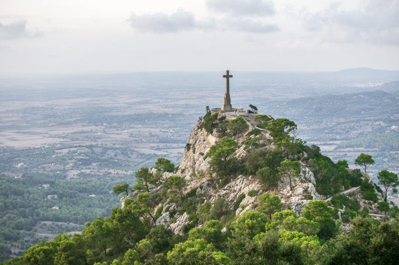
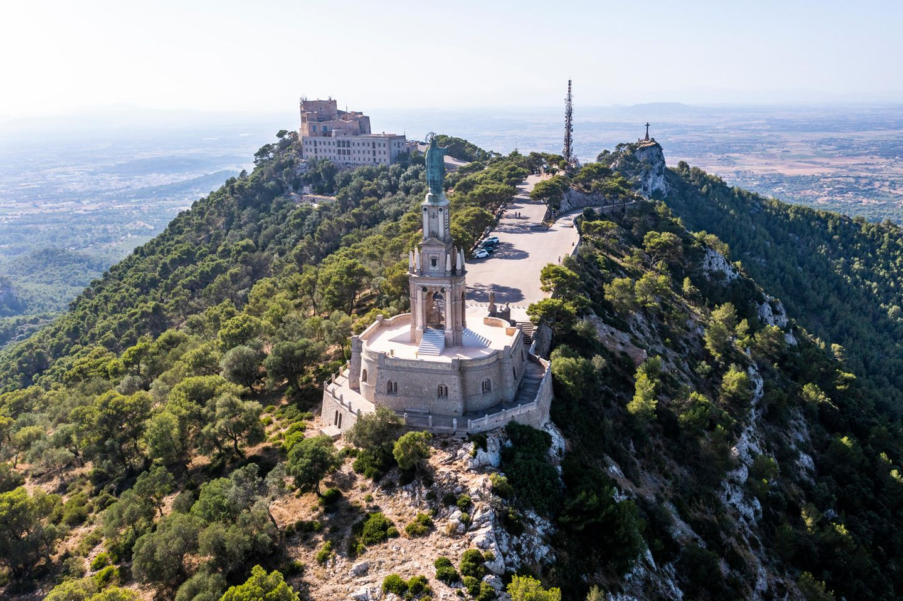
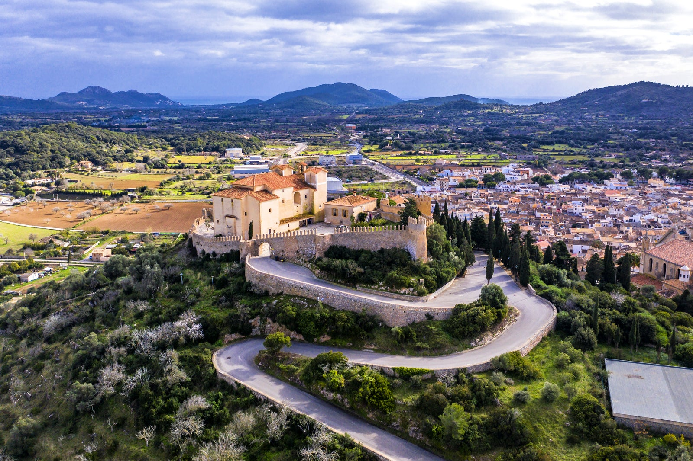

Sanctuary of Sant Salvador, Felanitx, Illes Balears, Spain



| Distance | 8.9km-circular |
|---|---|
| Time | 2hrs 53mins |
| Difficulty | Moderate |
| Elevation | 378 metres |
Originally built as a form of protection from the plague, this 14th century sanctuary delivers breath-taking views to those who reach the top. The ascent benefits from a lovely café at the top.
Click for trail infoNorth Arden Trail - Parish Loop, Nuneaton, Warwickshire, England


| Distance | 3.22km-circular |
|---|---|
| Time | 1hrs 2mins |
| Difficulty | Moderately to Easy |
| Elevation | 134 metres |
This pleasant trek in the heart of Warwickshire benefits from it's lack of knowledge (not many people know of this trail). If you're after some quiet time, this is an ideal walk full of beauty and nature.
Click for trail info